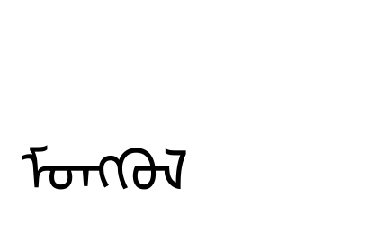
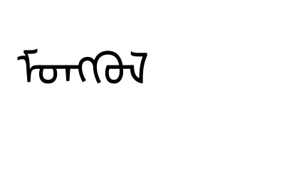
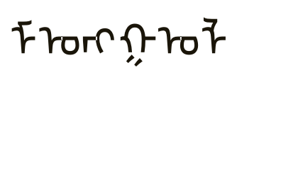
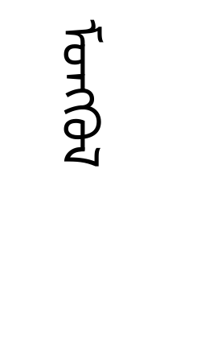

如何利用 HarfBuzz 在 Qt 上绘制字形
UME 项目组内部教程 · A02（A） · 字形号、advance 与 offset 怎么变成屏幕像素：QTextLayout、QGlyphRun、轮廓与竖排
C++ Qt HarfBuzz 渲染
A01 讲到 hb_shape() 交出三样东西：字形号、位置、簇。
本篇接着往下走 —— 这三样怎么变成屏幕上的黑点，以及在 Qt 里具体怎么写。
A01 管的是「整形」：给定文本与字体，算出该用哪些字形、各占多宽。
本篇管的是「落笔」：把这些字形号交给 Qt 的画笔，按位置画出来。
两篇的分界就是 hb_shape() 那一行：它之前是本篇的输入，它之后是本篇的活。
1两条路线
在 Qt 里拿到字形，有两条路。它们出口相同 —— 最后都是
QGlyphRun 交给 QPainter。

| 路线 | 入口 | 拿到什么 | 什么时候选它 |
|---|---|---|---|
| A | QTextLayout |
QTextLine::glyphRuns() |
要快、要不引额外依赖 —— 绝大多数场景 |
| B | hb_buffer + hb_shape |
hb_glyph_info_t / hb_glyph_position_t |
要逐簇控制、要缓存、要导 SVG |
QTextLayout 内部就是 HarfBuzz（Qt 自己编进去的）。
所以「用不用 HarfBuzz」不是二选一 —— 区别只是谁来调。
第 4 节会拿实测数字证明：Qt 交出的字形序列与推进量，与直接调
uharfbuzz 得到的结果逐项一致。
2坐标模型
画字形只需要两个量：画在哪（位置）与下一笔从哪开始（推进）。 两者的关系是这篇唯一必须记牢的规则：

pen = 0;
for (每个字形) {
画在 (pen + x_offset, y_offset); // offset 只挪这一下
pen += x_advance; // advance 推进笔
}
三个概念分清：
| 量 | 单位 | 含义 |
|---|---|---|
| advance | 像素（已除 64） | 排下一个字形前，笔往前走多少。决定行宽 |
| offset | 像素 | 字形相对 pen 偏多少。不推进笔 |
| 基线 | 像素 | y 的原点。字形在基线上方的部分叫 ascent，下方叫 descent |
HarfBuzz 的坐标系 y 向上（y_offset 正值往上）；Qt 的屏幕坐标
y 向下。搬运时 y_offset 要取负，否则重音符号会跑到字下面去。
实测这支蒙文字体在 64px 下：ascent 93、descent 19、leading 0（QRawFont 报的值）。
3字体必须是同一份
A01 说过：字形号是字体内部的下标，换一个文件就是另一个字。 所以在 Qt 这边，加载字体的方式必须与 HarfBuzz 那边指向同一个文件。
/* ① 注册进 QFontDatabase：QFont(族名) 才找得到它 */
const int id = QFontDatabase::addApplicationFont(":/fonts/NotoSansMongolian-Regular.ttf");
/* ② 用**同一个文件**建 QRawFont：拿字形轮廓、字形号 */
QRawFont raw(":/fonts/NotoSansMongolian-Regular.ttf", 64.0);
实测：只建 QRawFont 而不注册 QFontDatabase，
QTextLayout 给出 6 个字形、编号全是 1（.notdef）、
每个推进正好 1 em —— 整串排出来是一排豆腐块，而且不报任何错误。
原因是 QFont(族名) 按族名找字体，没注册就找不到，退回默认字体。
这个错误在日志里只有一行 QFontDatabase: Cannot find font directory …，
很容易当成无关警告划过去。
★4路线 A：让 Qt 调 HarfBuzz
两步：把文本交给 QTextLayout 排成行，再从行里取字形段。
QTextLayout layout(text, font);
QTextOption opt;
opt.setWrapMode(QTextOption::NoWrap); /* 整形不负责断行（A01 第 3 节） */
layout.setTextOption(opt);
layout.beginLayout();
QTextLine line = layout.createLine();
line.setLineWidth(10000); /* 一行放到无限宽 */
layout.endLayout();
for (const QGlyphRun& gr : line.glyphRuns()) {
painter.drawGlyphRun(QPointF(0, 0), gr); /* 位置已经在 run 里 */
}
实测：Qt 交出的就是 HarfBuzz 的结果
同一串 ᠮᠣᠩᠭᠣᠯ（6 个码位），64px，Noto Sans Mongolian：
字形号: 1653 1202 1268 1584 1660 ← 5 个，不是 6 个 位置 : 0.0 31.0 68.0 107.0 161.0 行宽 : 186.0
把 A01 里 uharfbuzz 的推进量按 64px 换算（UPEM 1000，
所以 1 单位 = 0.064 px），再累加：
| 字形 | HB 推进（单位） | 换算成 px | 累加位置 | Qt 给的 |
|---|---|---|---|---|
| 第 1 个 | 492 | 31.49 | 0.00 | 0.0 |
| 第 2 个 | 573 | 36.67 | 31.49 | 31.0 |
| 第 3 个 | 614 | 39.30 | 68.16 | 68.0 |
| 第 4 个 | 838 | 53.63 | 107.46 | 107.0 |
| 第 5 个 | 383 | 24.51 | 161.09 | 161.0 |
| 合计 | 2900 | 185.6 | 186.0 |
位置逐项相同（小数被 Qt 取整到像素），总宽 185.6 ≈ 186.0。 这不是巧合 —— Qt 调的就是 HarfBuzz。
顺带确认了 A01 的结论：6 个码位 → 5 个字形， 因为第 4 个字形是两个码位合成的连字。
5路线 B：自己调 HarfBuzz
要让程序直接 #include <hb.h> 并链接，得自己有一份库。
Qt 只在 include/QtHarfbuzz/ 下带了头文件，不带可链接的库 ——
本机实测 Qt/6.12.0/mingw_64/lib 下没有任何 harfbuzz 库文件。
- 从源码编一份（本篇采用）：HarfBuzz 是自包含的 C 库，MinGW 下 编译只要二十几秒，装在一个前缀目录里即可。
- 不链接：拿别的语言绑定做验证与对拍（本项目
report/就是 Python +uharfbuzz生成的）。 - 用 Qt 内部那份：只在 Qt 源码树里可行，应用层拿不到，别打这个主意。
本机的安装记录
下面这四步是本机实际跑过的，可以直接照抄（路径换成你自己的）：
# ① 取源码（本机 HTTPS 不通，走 SSH 443）
git clone --depth 1 ssh://git@ssh.github.com:443/harfbuzz/harfbuzz.git D:/libs/harfbuzz-src
# ② 配置：静态库，关掉用不上的依赖
cmake -S D:/libs/harfbuzz-src -B D:/libs/harfbuzz-build -G Ninja \
-DCMAKE_BUILD_TYPE=Release \
-DCMAKE_INSTALL_PREFIX=D:/libs/harfbuzz-mingw \
-DCMAKE_C_COMPILER=D:/Qt/Tools/mingw1310_64/bin/gcc.exe \
-DCMAKE_CXX_COMPILER=D:/Qt/Tools/mingw1310_64/bin/g++.exe \
-DBUILD_SHARED_LIBS=OFF \
-DHB_BUILD_UTILS=OFF -DHB_BUILD_SUBSET=OFF \
-DHB_HAVE_FREETYPE=OFF -DHB_HAVE_GLIB=OFF -DHB_HAVE_ICU=OFF
# ③ 编译（第 84 个目标才是库本身，前面是生成代码）
cmake --build D:/libs/harfbuzz-build
# ④ 安装 → include/ + lib/ + lib/cmake/
cmake --install D:/libs/harfbuzz-build
D:\libs\harfbuzz-mingw\ include\harfbuzz\hb.h 1,606 B lib\libharfbuzz.a 2,955,662 B lib\cmake\harfbuzz\harfbuzzConfig.cmake HB_VERSION_STRING = "14.6.0" ← 与 A01 用的 uharfbuzz 14.6.0 同版本
手工编译时只要两个参数：
g++ app.cpp -std=c++17 \
-I D:/libs/harfbuzz-mingw/include/harfbuzz \
-L D:/libs/harfbuzz-mingw/lib -lharfbuzz \
-o app.exe
CMake 工程里更省事，直接让 find_package 去找那份 config：
list(APPEND CMAKE_PREFIX_PATH "D:/libs/harfbuzz-mingw") find_package(harfbuzz REQUIRED) target_link_libraries(app PRIVATE harfbuzz::harfbuzz)
实测：自己算出来的与 Qt 算出来的完全一致
同一个字体文件、同一串 ᠮᠣᠩᠭᠣᠯ、同样 64px， 两条路各算一遍：
| 字形号 | 位置 | |
|---|---|---|
路线 AQTextLayout |
1653 1202 1268 1584 1660 | 0.0 31.0 68.0 107.0 161.0 |
路线 Bhb_shape |
1653 1202 1268 1584 1660 | 0.00 31.48 68.16 107.45 161.08 |
这再次证明 Qt 调的就是 HarfBuzz（A01 第 4 节那张换算表也指向同一结论）。 唯一的差别是：Qt 把位置取整到了整像素，HarfBuzz 给的是小数。
原因是 Qt 默认关闭亚像素定位（subpixel positioning）：它认为整像素落笔 更清晰，代价是字距有不到 1px 的抖动。这个差别画出来是什么样，见第 7 节。
从 hb_ 的结果搬到 QGlyphRun 是这一段：
QVector<quint32> idx;
QVector<QPointF> pt;
double pen = 0.0;
for (unsigned i = 0; i < n; ++i) {
idx << info[i].codepoint; /* 字形号 */
pt << QPointF(pen + pos[i].x_offset / 64.0,
-pos[i].y_offset / 64.0); /* y 取负：屏幕向下 */
pen += pos[i].x_advance / 64.0; /* 64 = 定点精度 */
}
QGlyphRun run;
run.setRawFont(raw); /* 与 hb_font 同一个文件 */
run.setGlyphIndexes(idx);
run.setPositions(pt); /* 这里要**绝对**位置（相对 run 原点） */
painter.drawGlyphRun(QPointF(0, 0), run);
positions() 里每个点都是相对 run 原点的绝对坐标，
不是「相对上一个字形」的推进量。实测第一项是 0.0，
正好说明它从原点起算。
把 advance 直接塞进 setPositions 的结果是：所有字形挤在
原点附近、越画越歪，而且看起来像字距问题，很容易往错误方向查。
6QGlyphRun 与 drawGlyphRun
| 接口 | 作用 |
|---|---|
setRawFont(font) | 用哪份字体 —— 必须与整形时同一份 |
setGlyphIndexes(ids) | 字形号数组（quint32） |
setPositions(pts) | 每个字形的左基线点，相对 run 原点 |
setBoundingRect(r) | 可选的脏矩形，给合成器做裁剪用 |
drawGlyphRun(origin, run) | 把整个 run 画在 origin 处 |
drawGlyphRun 的 origin 是整条 run 的原点，
只加一次；run 内部的相对位置不会被它重复叠加。所以上面的代码里给的是
QPointF(0, 0)，真正的定位交给画家的变换矩阵（translate）。
7两条路的逐像素验证
「drawGlyphRun 与 layout.draw 画出来一样吗？」
实测：420×260 的图上，不同像素 0 个。

layout.draw()
drawGlyphRun()两张图肉眼就一样，逐像素比较也是 0 差异。这条验证的价值在于： 它可以当成回归测试 —— 以后改绘制代码，跑一次比较就知道有没有改坏。
再比一次：路线 A 对路线 B
把第 5 节「自己调 HarfBuzz」拼出的 QGlyphRun 也画一遍，
三张图放一起比：
QTextLayout
hb_shape 自己拼A 的两种画法（layout.draw vs drawGlyphRun） 差 0 像素 A（QTextLayout） vs B（自己调 HarfBuzz） 差 6234 像素（约 5.7%）
因为落笔位置差在小数上：HarfBuzz 给 31.48、68.16……， Qt 给 31、68……。差不到 1px，但抗锯齿的边缘正好落在这些小数上， 于是整串字的灰度分布全变了。
两条结论：
- 要逐像素一致：把 B 的位置也取整
（
qRound(pen)），或者给 Qt 打开亚像素定位。 - 要视觉一致就够：两条路随便挑 —— 人眼分不出这两张图。
不要把 6234 当成 bug。它是两个引擎在取整时机上的不同选择： Qt 在布局阶段就取整（累加整数），HarfBuzz 全程保留小数。
真要逐像素对齐，就在搬运时统一取整，别指望两边各自算出同一个数。
int diff = 0;
for (int y = 0; y < H; ++y) {
const QRgb* ra = (const QRgb*)a.constScanLine(y);
const QRgb* rb = (const QRgb*)b.constScanLine(y);
for (int x = 0; x < W; ++x) if (ra[x] != rb[x]) ++diff;
}
qInfo() << diff; /* 0 = 两种画法等价 */
8反例：glyphIndexesForString 不是整形
QRawFont 有个看起来正好合用的函数 ——
glyphIndexesForString(text)。它不能用来替代整形。
QTextLayout 5 个字形：1653 1202 1268 1584 1660 ← 整形过 glyphIndexesForString 6 个字形：1651 1197 1266 1540 1197 1659 ← 只查 cmap
差别不只是数量：拿这 6 个字形画出来，是六个互不相连的孤立形 —— 下面这张图就是用它们画的，可以清楚看到没有连写：

cmap 不整形：字母之间不连，形态也不对这个函数做的事是「每个码位去 cmap 查一个字形」，
一步上下文分析都不做。它不调 HarfBuzz，
所以既没有 init/medi/fina，也没有连字，更没有天城文那种重排。
判断标准很简单：看它有没有接受 script / direction / language 参数。 一个接收不了这些参数的函数，不可能做整形。
9竖排：整体旋转
A01 第 15 节说过：这支蒙文字体没有 vmtx，ttb 给的推进量
是假的，只能横排之后整体转 90°。在 Qt 里这件事就一行 rotate：
painter.translate(width - 90, 24); /* 旋转基点：右上角 */
painter.rotate(90); /* 顺时针 90°，横排结果立起来 */
for (const QGlyphRun& gr : line.glyphRuns())
painter.drawGlyphRun(QPointF(0, 0), gr);

rotate(90) 之后的效果① 旋转基点要挑对。用右上角，整列才会往下长； 用原点会让文字跑到画布外面去。
② 标点要换字形。括号、引号这类竖排时方向不同，
要用 vert 特性换成竖排变体（A01 第 15 节）。
只旋转不换字形，括号的开口会朝错方向。
10取轮廓：从字形到路径
要描边、要做动画、要导出 SVG，就不能只画像素 —— 要拿到轮廓。
QRawFont::pathForGlyph() 直接把字形号变成 QPainterPath。
QPainterPath all;
qreal pen = 0;
for (quint32 g : glyphIds) { /* 整形后的字形号 */
QPainterPath gp = raw.pathForGlyph(g); /* 单位是像素，已按像素大小缩放 */
all.addPath(gp.translated(pen, 0));
pen += gp.boundingRect().width() + 6; /* 这里只是演示平铺，不是排版 */
}
painter.fillPath(all, QColor("#1a1509"));
实测这一串 6 个字形（正是上节那些孤立形）取出来的路径：
455 个元素，包围盒 301.28 × 69.50 像素。
转成 SVG 的 path d 是 4383 个字符 ——
比一张 PNG 小得多，而且是矢量的。
| 要什么 | 用什么 |
|---|---|
| 屏幕显示 | drawGlyphRun（走字体栅格缓存，最快） |
| 矢量导出 | pathForGlyph → QPainterPath → SVG |
| 位图导出 | 画到 QImage 再 save() |
三者用的都是同一个字形号，所以结果必然一致 —— 前提是字体没换。
11性能与缓存
A01 第 17 节的结论在这里落地成三处缓存：
| 缓存 | 放在哪 | 键 |
|---|---|---|
| 整形结果 | 自己的 QHash |
字体 + 字号 + 文本 + 特性集 |
| 字形栅格 | QPixmapCache 或字体引擎自带 |
字体 + 字号 + 字形号 |
| 整段排版 | QTextLayout 对象 |
段落 + 列宽 |
/* 错了：每次击键都重建 QTextLayout，还把整篇重新 layout 一遍 */
void onTextChanged() { layout.setText(fullText); relayout(); repaint(); }
/* 对了：只重排受影响的那一段，其余用缓存 */
void onTextChanged(int pos) { dirty(paragraphOf(pos)); relayoutDirty(); }
- 逐簇整形。把每个簇单独送进整形，连写就断了 —— 与 A01 第 17 节同一个坑，只是换到 Qt 这一侧。
- 在
paintEvent里建QRawFont。 它是重对象（要解析整张字体表），必须建一次存起来。 - 每次重画都
pathForGlyph。轮廓提取比画字形贵一个量级， 矢量导出时才用，别放进绘制循环。
12一页速查
| 要做的事 | 写法 |
|---|---|
| 加载字体 | addApplicationFont() ＋ QRawFont(同一文件, px) |
| 路线 A | QTextLayout → line.glyphRuns() |
| 路线 B | hb_shape() → 自己拼 QGlyphRun |
| 拼 QGlyphRun | setRawFont / setGlyphIndexes / setPositions |
| 坐标 | pen + x_offset 定位，pen += x_advance 推进，y 取负 |
| 定点数 | 一律 / 64.0 |
| 竖排 | translate(基点) ＋ rotate(90) |
| 矢量导出 | pathForGlyph() → QPainterPath → SVG |
- 字体同一份 —— HB 与
QRawFont必须指同一个文件； 只建QRawFont不注册QFontDatabase，会得到一排不报错的豆腐块。 - positions 是绝对坐标（相对 run 原点），不是 advance。
- y 取负 —— HB 向上，屏幕向下。
glyphIndexesForString不是整形 —— 它不接 script/direction/language。- 竖排自己转 —— 字体没有
vmtx，别信ttb的推进量。 - 重对象建一次 ——
QRawFont、QTextLayout都别放进绘制循环。
- A01 · HarfBuzz 及其基础用法 —— 本篇的上一半。字形号、位置、簇从哪来，全在那一篇。
- Q11 · 线程与互斥锁
——
QRawFont与hb_font都不是线程安全的， 渲染线程与排版线程要各持一份。 - FE-06 · Writing Mode 与溢出滚动
—— 同一件竖排的事，浏览器里由
writing-mode代劳； 对照第 9 节看，能看出引擎替你做了多少。 - T03 · 字体文件结构大揭秘 —— 第 3 节说「字体必须是同一份」， 那篇解释了为什么换一个文件字形号就全错位。